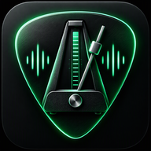

♫ GUITARRA · PRÁCTICA GUIADA
Pulso
Metrónomo gratuito y completo para práctica musical.
Tranquilo30–240 BPM
72
BPM
✓ Consejos para practicar
Empieza cómodo.
Usa una velocidad donde puedas tocar sin errores.
Sube poco a poco.
Aumenta entre 2 y 5 BPM después de varias repeticiones limpias.
Cuenta en voz alta.
Cuenta los pulsos y luego prueba las subdivisiones.
Escucha la tensión.
Si aparecen errores o rigidez, baja el tempo.
Entrena el pulso interior.
Alterna compases con clic y en silencio.
Sesiones breves.
Practica unos minutos con atención en vez de repetir sin enfoque.
▶ Rutinas rápidas
◎ Entrenador progresivo
Subir BPM
2
Cada compases
4
◐ Pulso interior
Compases
2
♫ Compás
◉ Subdivisión
🔊 Sonido y visual
Ayuda a mantener el ritmo sin depender siempre del clic.